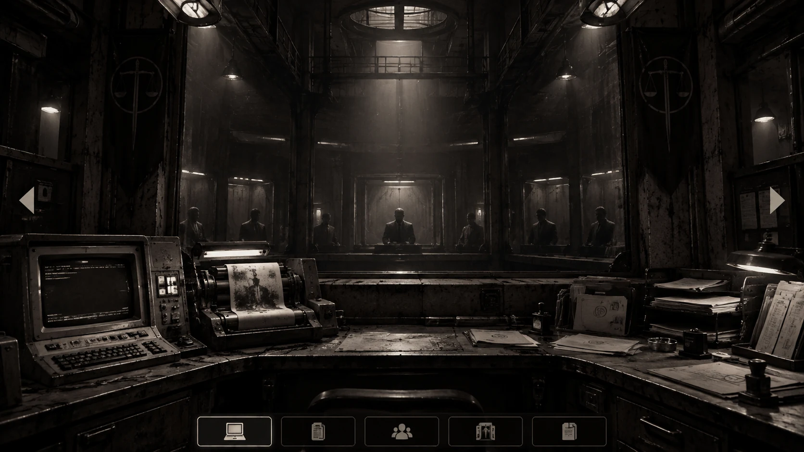

THE HERO FACTORY · CASE 01 · MONTELARA / 1965
Chiến công có thật.
Những cái chết cũng vậy.
Trên bàn có hai bản báo. Tất cả hướng điều tra đều mở từ những chữ thực sự in trên giấy; không có sơ đồ lời giải.
Gõ tên vụ, địa điểm hoặc số hồ sơ mày đã thấy trên giấy.
TỔNG ĐÀI TRUYỀN ẢNH · 000
Wirephoto
Gõ mã ảnh thực sự in trong một hồ sơ đã đọc. Tổng đài chỉ truyền bản ảnh có hồ sơ nguồn; mỗi yêu cầu thành công in một bản mới.
POSTHUMOUS TESTIMONY
Đối chất với linh hồn
Mọi người trong 30 linh hồn đều có thể được hỏi. Chỉ những người có kiến thức liên quan mới nói điều giúp điều tra; lời sau khi chết không biến thành chứng cứ lịch sử.
THE DOSSIER DESK · MONTELARA, 1965
Bàn điều tra
Giữ và kéo để đặt đồ ở bất kỳ đâu. Click giấy để phóng to. Click một bìa để chọn bìa. Thứ tự hình ảnh khác thứ tự chứng cứ.
Giấy mới in sẽ nằm trên bàn. Đặt chồng, chọn bìa, kẹp và ghi tên khi sẵn sàng.
Giấy đã bỏ
Ảnh và giấy được giữ nguyên nguồn. Để tạo nhiều bìa, kẹp hoặc bảng tên, cứ bấm lấy thêm. Không có tự động sắp hàng.
NINE INFERNAL ADMISSION ROOMS
Tiếp nhận hồ sơ
Chọn linh hồn và phòng tiếp nhận. Một vụ án có thể cho thấy tội nghiêm trọng mà vẫn chưa chứng minh được tội sâu nhất của người đó.
THE GRAND LEDGER
Ba mươi cái tên
Sổ gốc chỉ có số ID và tên. Không có nghề, case, tầng hay lời giải sẵn. Danh mục nhân sự được tra riêng bằng IBM.